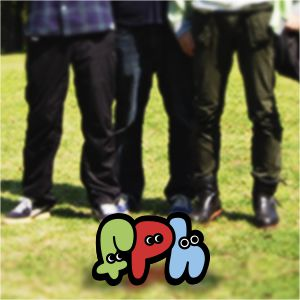
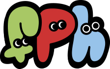
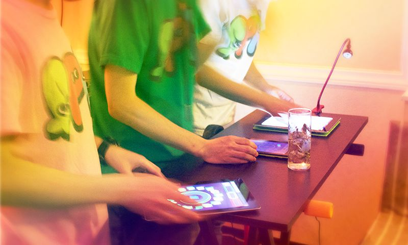
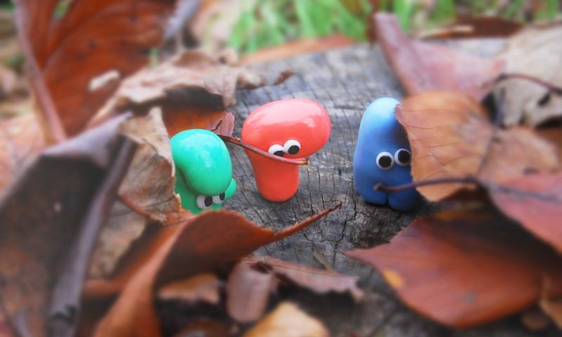
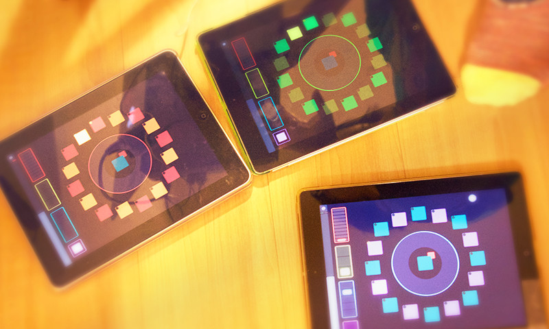
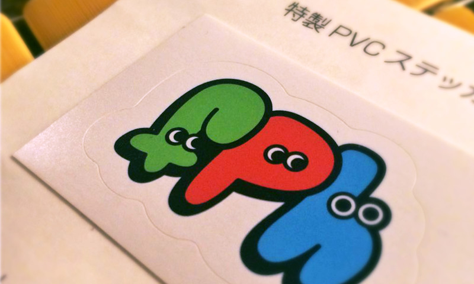
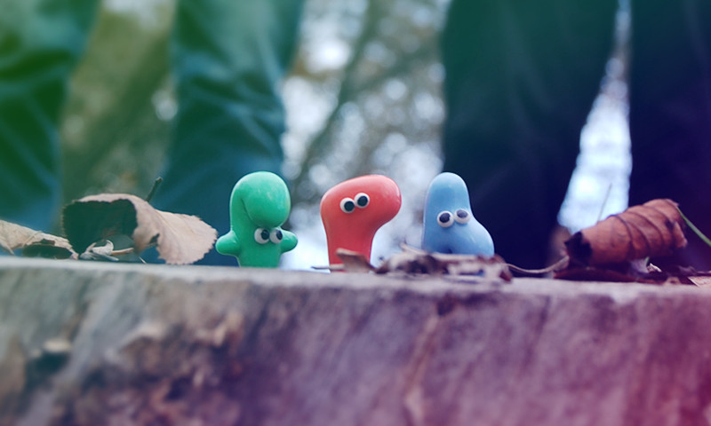

ふぷほ （fupuho）
ESC TRAXコアメンバー（ebi1000,suesett,Ca5）によるチルアウトユニット。2014年結成。3人それぞれが作曲し、ライブではipadを使用し演奏を行う。tecchniqueなどの出演を経て今回初のEPをリリース。
ESC TRAX コアメンバーによるチルアウトユニット「ふぷほ」
ESC TRAX は 2017/8/8で丁度2周年を迎え、コアメンバーによるチルアウトユニット「ふぷほ」の初リリースを行いました。
今回は趣向を変えて、メンバーの座談会という形でユニットについて紹介します！
- メンバー略歴
- ebi1000：レトロゲーム音楽をブレイクコアアレンジするサークル「east breaks in thousand」の中の人。社畜をこじらせて開店休業中。
- suesett：2009年にゲームボーイとnanoloopを手に入れチップチューン制作を始める。その後、コナミ拡張音源VRC6と出会い、以降はファミコンでVRC6を使用した楽曲を制作している。
- Ca5：主にチップブレイクを軸に、ナードコア寄りなマッシュアップからLSDjを使ったチップチューン等を制作。max/mspを使用しiPadやarduinoなどをコントローラーとする独自システムを使ったライブを行う。
今回初EPリリースの「ふぷほ」はどういったユニット？
- ebi1000：俺ら（ebi1000, suesett, Ca5）が三人それぞれ作曲して、みんなで曲を持ち寄って演奏しようぜっていうユニットだよね。
- Ca5：僕はチップブレイクで、二人はチップチューン（suesett）、ブレイクコア（ebi100）と3人微妙にバラバラなんですけど、3人でスプリットとかよくやったり 3人集まってなにか作ったり行動したりが多くって、確かそれが元ですよね。
- suesett：僕がチップチューンとは違う曲を定期的に作りたくなるんで、普段の活動と別な体系での活動をやってみたい、って話はしてたんよな。
- ebi1000：スプリットとかやってたからDropboxの3人共用の作業フォルダってのがあったんだけど、 suesettが「作った覚えがないんやけど」って未発表エレクトロニカっぽい曲をシェアしたのが最初かな？
ちょうど同じ時期に俺もアーメンを入れない曲を作ってて、でも「自分の名義でやるにはな～」みたいな曲があったけど、聞いてみたらテイストが似てて。 これ、「一緒にユニット組んだらいいんちゃう？」って - Ca5：三人ともエレクトロニカが好きで良さげなアーティストを教えあってたりしたからテイスト似たりしたんですかね～？

「ふぷほ」の由来は？
- Ca5：これ、元々何なんでしたっけ？（笑）
- ebi1000：もうはるか昔だから記憶がおぼろげなんだけど、俺のタイポ※かなんかだよね ※文字の打ち間違い
- suesett：あれ、言い間違いやなかったっけ（笑）
- ebi1000：完全に俺らだけで悪乗りしてチャットのグループ名にしてたよね、まあ、どっちにしろ意味はない（笑）

3人が影響を受けたアーティストは？
- suesett：同じエレクトロニカ系とはいえ、3人とも影響うけたアーティストは結構ちがうやんな？
- ebi1000：俺は曲的には全然影響受けてないかもだけど、 「Ulrich Schnauss」、「tycho」とかはイメージが影響受けてるのかな？
tychoとかの曲とビジュアルイメージが一致してるみたいな感じは曲を作るときにふんわり意識しちゃう。 - suesett：僕は好きなんは色々あるけど、ふぷほとして影響を受けたんは「Manual」とか「I am robot and proud」とかかな～？
- Ca5：ぼくは「Lifeformed」、「Minikon」とかですかね、あと「Secede」。
ちょっとブレイクコアっぽさもあるかもしれないですが、 この曲のきれいなメロディーと早めのドラムパートのイメージは、今回リリースした曲に特に影響が出ているかもしれないです。
ライブではiPadを3台並べて演奏、どういった構成？

- Ca5：iPad 3台にそれぞれTouchOSCというOpenSoundControl準拠のコントローラーアプリが入っていて、Wifi経由でAbleton Liveのプラグインを操作してリアルタイムに音源をいじれるような作りになっています。
それぞれのiPadが メロディパートx2, ドラムパートx1と割り当てられていて、各曲ごとに役割をローテーションさせて演奏しています。
このシステムは僕がライブするときにドラムをスライスするために作ったものが元ですね。 - ebi1000：このシステムがあったから「3人でライブできるんじゃね？」ってなったところあるよね。
- suesett：Ca5さんにはホント頭があがらんな～
- Ca5：3人がそれぞれ作曲した曲を持ち寄って、一つのプロジェクトにまとめて演奏しています。
基本的にはオリジナル曲を演奏ですけど、最近は3人共ハマっているvaperwaveっぽい曲とか、サンプリングメインの曲もやったりしますね。 - suesett：まだライブはあんまりやってないから、スタイルは試行錯誤しながらうまいことやってけたらええな～。
- ebi1000：もうちょっと視覚的なパフォーマンスも追加できたらな～とは思うけど。。。Ca5さん、お願いッ！
- Ca5：え～(笑）
- suesettt：丸投げやん（笑）
今回のリリースについて
- ebi1000：実は2年くらい前にほとんど曲は完成してたよね？
- Ca5：なんかリリースするタイミングが合わずに結局今までずるずるやっちゃいましたね。
- suestt：なんのかんのいって、2周年のタイミング※にリリースできたし、よかったんちゃう？（笑）※EST TRAXの設立が2015年8月8日
- ebi1000：調子に乗ってユニットのロゴやらジャケ写やらステッカーやらTシャツまで作って。
リリースしてないのにグッズとかはやたら充実してる（笑）

今回のリリースのコンセプト
- ebi1000：ふぷほのアーティストコンセプトとも共通してるんだけど、森や草花といった自然がテーマ。
- suesett：曲名もAを▲にしたりとかで異質感をだしたり、一部音作りとかもウェイブ系のジャンルをちょっと意識したりはしてるよな。
- Ca5：共通イメージは統一しつつも、楽曲自体は各メンバーが結構自由に作って寄せ集めたものになってますね。
- 各楽曲のコンセプト:
- 01 - ▲CID F○LKL●RE
- suesett：鬱蒼とした森を抜けだして、ぱっと風景が切り替わった時の感覚を音にしてみたいなと思って作った曲。実際にある風景が元というようりは、クロノトリガーとかミスティックアークとか16bitゲーム機以降のRPGに出てくる風景のイメージが根底にあったと思うな。
- 02 - 5TRE▲M
- Ca5：丁度作曲をしていたのが夏前くらいだったんで、川が流れるような涼しげなイメージで作った曲ですね。少しテンポを上げてノリの良い感じに仕上げました。
- 03 - △N●THER F○REST
- ebi1000：足音とか鳥の声の音とか使って深い森に入っていくようなイメージで作った曲。 深～い森の奥の暗いところにあのふぷほのキャラクターが住んでる、みたいなイメージなんでタムのポコポコした音とか入れて。暗いけどちょっとだけ明かりが挿してる、みたいな。
- Ca5：もうすでにアルバム分の曲はあるから、今回はシングルカット、みたいな感じで一部先行リリースって感じですかね。
- suesett：完全版は2017年秋のM3でリリースする予定やね。

今後の展望について
- suesttt：特定のジャンルだけにこだわらずに、各メンバーがその都度興味を持ったものを ユニットに持ち寄って活動できたらな～とは思ってるな～。
- Ca5：あまり気張らず、マイペースに長くやっていきたいですね。
- ebi1000：ライブももっとしたい感じはあるよね。出演募集中です！
【fupuho - discography】


編集・テキスト：ESC TRAX／撮影：Terminal Connect